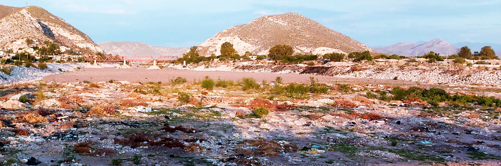

El municipio de Torreón cuenta con un servicio de limpieza (recolección de basura) que en las encuestas de percepción se considera bueno. Difiero. Por la cantidad de dinero que se paga mensualmente, podríamos y deberíamos tener una ciudad más limpia. Sin embargo, no se trata solo de pagar. A fin de cuentas, las personas sacan a la banqueta la basura y el camión que pasa tres veces a la semana, se lo lleva. Fuera de vista, se terminó el problema.
¿Pero qué sucede si se hicieron podas o se cortó el césped? ¿Qué sucede si se hizo una pequeña remodelación que generó menos de un metro cúbico de escombro? La ley marca que el generador es responsable de sus residuos hasta la correcta disposición final. ¿Qué opciones damos a los ciudadanos que se encuentran en esta situación? ¿Qué es lo que hace el ciudadano? Es de todos conocido que lo más sencillo es contratar a un carromatero para que retire las podas o el escombro. ¿Y el carromatero dónde depositará estos residuos? También ya lo sabemos. En cualquier parte: cauce del río, arroyos, lotes baldíos, espacios públicos y predios sin vigilancia. De esta forma todos estamos contribuyendo al problema. Y entre todos pagamos, ya que resulta oneroso para la ciudad estar limpiando lo que otros tiran y que luego también tapona el drenaje.
Y eso sin siquiera tocar el tema del abuso que se hace de los animales de tiro. La solución que propongo en este breve escrito es que el municipio establezca un sistema a través del cual se pueda solicitar el servicio de retiro de podas o escombro cuando estos no excedan una cantidad, (2 m3 de escombro o de podas, por ejemplo). El servicio tendría un costo (que de hecho ya se encuentra en la Ley de Ingresos desde hace años), generaría empleos y abonaría a la responsabilidad ambiental que los ciudadanos debemos ejercer. El escombro tiene el potencial de ser transformado en materiales que se pueden usar nuevamente. Las podas se pueden convertir en composta. Ya se hace en otras ciudades. ¿Por qué en Torreón no?